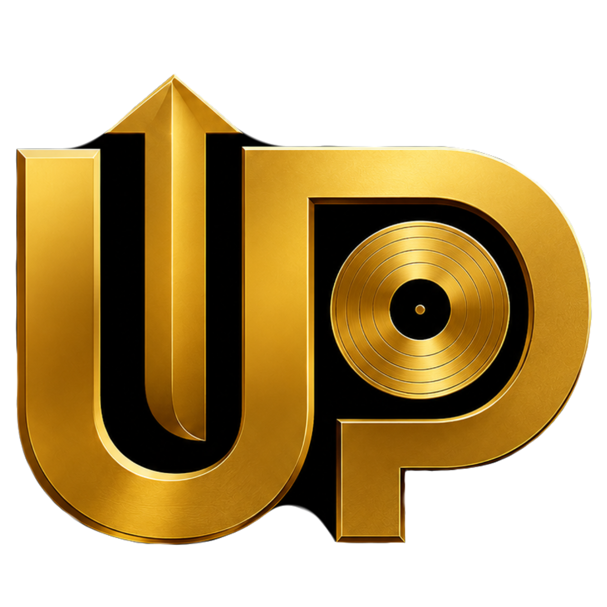

Partenaires IMC
Des collaborations stratégiques pour valoriser la musique congolaise.
Nos partenaires officiels
L’Institut Musical Congolais collabore avec des acteurs engagés dans le développement et la promotion de l’industrie musicale congolaise.

Music Metrics RDC
Partenaire média officiel
Music Metrics RDC assure la couverture médiatique des classements, certifications et actualités de l'IMC.

UP Honors
Fabricant officiel des plaques IMC
UP Honors conçoit et fabrique les plaques officielles remises aux artistes certifiés par l'IMC.
Devenir partenaire IMC
L’Institut Musical Congolais reste ouvert aux collaborations avec les médias, entreprises, labels, artistes et organisations culturelles souhaitant contribuer au développement de la musique congolaise.
Nous contacter